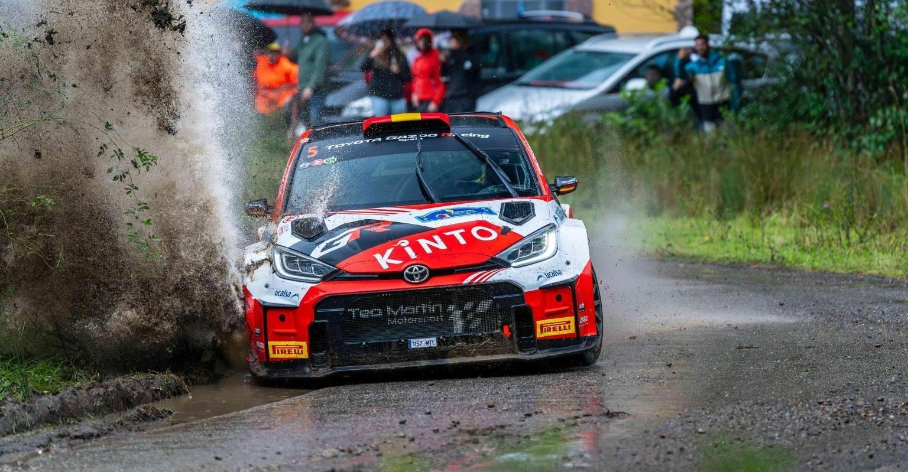

Rally Princesa de Asturias

Velocidad y Tradición en el Corazón de Asturias
El Rally Princesa de AsturiasCiudad de Oviedo no es solo una competición automovilística; es una leyenda viva del deporte en España. Desde su primera edición en 1964, esta prueba ha sido el escenario donde se han forjado los mejores pilotos del país, convirtiéndose en una cita ineludible del Supercampeonato de España de Rallyes (S-CER) y gozando de un enorme prestigio internacional.
Organizado por el Automóvil Club del Principado de Asturias (ACPA), el rally destaca por la complejidad técnica de sus tramos. Las carreteras asturianas, famosas por su firme deslizante, sus curvas ciegas y una meteorología siempre imprevisible, exigen una precisión milimétrica y un valor excepcional a pilotos y copilotos. La edición de 2026, que se celebrará el 12 de febrero, promete ser una de las más emocionantes de la historia, con un recorrido que combina tramos clásicos con nuevos desafíos, y una participación que incluirá a los mejores equipos nacionales e internacionales. El Rally Princesa de Asturias es, sin duda, una celebración del automovilismo que atrae a miles de aficionados cada año, ofreciendo un espectáculo único en el corazón de Asturias.
Lo que realmente hace único al "Princesa" es su gente. Las cunetas de Asturias se llenan cada año de miles de seguidores que, con su respeto y entusiasmo, crean una atmósfera de seguridad y pasión que es referente en toda Europa.
En 2026, el Rally Princesa de Asturias promete ser, una vez más, el escaparate perfecto donde la velocidad, la tecnología y el paisaje asturiano se funden en un espectáculo inolvidable.